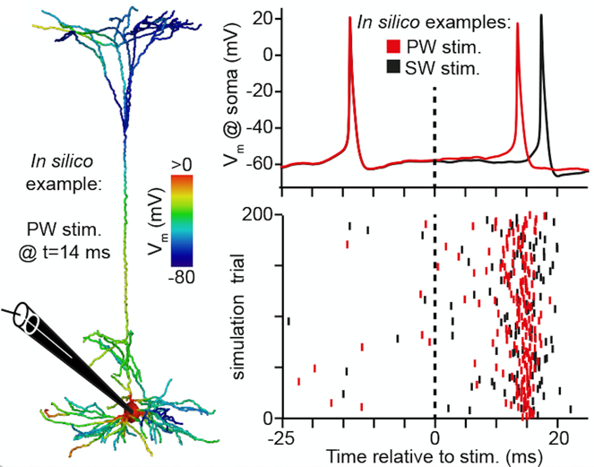
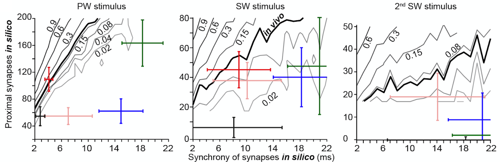
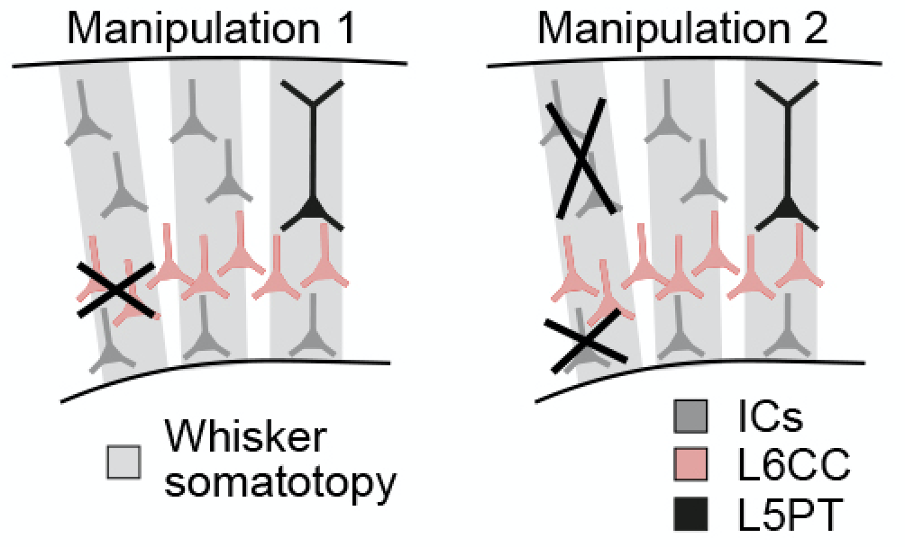

This is the multi-scale L5PT
neuron model from Egger, Narayanan et al.
It allows investigating how
synaptic inputs evoked by different sensory stimuli are integrated by the
complex intrinsic properties of L5PTs.
The model files provided
here allow performing simulations and analyses presented in Figures 3, 4 and 5.
1. Installation
Software requirements:
The model requires a Linux
or Mac OS X installation.
Software packages that have
to be installed:
Python
2.7
matplotlib
numpy
NEURON
>= 7.2
Needs to be installed such that it can be imported as python module.
For installation instructions see https://www.neuron.yale.edu/phpBB/viewtopic.php?t=3489.
Make sure to add the folder containing the
executable files such as nrnivmodl to
your PATH environment variable. For a typical installation, try:
$ export PATH=[/path/to/neuron]/[processor
architecture]/bin:$ PATH
sumatra and configparser
Used for reading and writing parameter files
Can be installed with pip:
pip
install sumatra
pip
install configparser
Model installation:
We provide four different
models: the control model (see Figure 3) describing sensory-evoked
responses of L5PTs, the reduced model (see Figure 4C) used to identify the
general conditions under which excitatory synaptic input results in L5PT AP responses
as observed in vivo, and two manipulation models (see Figure 5) complementing
in vivo pharmacology experiments.
The following instructions
assume that you open a terminal in the model_publication folder you downloaded and
unpacked.
First, in order to run the
provided python libraries, add them to your PYTHONPATH:
$ export PYTHONPATH=`pwd`/lib:$PYTHONPATH
Next, compile the NMODL
mechanisms:
$ cd mechanisms/
$ nrnivmodl
Next, change back into the
main model installation directory and run the shell script install.sh:
$ cd ..
$ ./install.sh
2. Running simulations
Control model:
The installation procedure
creates 90 shell scripts in the folder control_scripts.
Each shell script corresponds to a simulated sensory stimulus (PW [here: C2],
SW [here: B1-3, C1, C3, D1-3] and 2nd SW [here: E2]) of a L5PT
neuron model at one of nine locations. Each shell script calls the python
script L5PT_control.py with parameter files describing the biophysical neuron
model and the functional network model describing the presynaptic network
providing synaptic input to the L5PT neuron model after a given stimulus. These
functional network parameter files are generated during the installation and
can be found in the folder evoked_activity/control.
Run shell scripts in the
folder control_scripts to perform simulations. E.g., if you want to simulate the
response of the L5PT neuron at the center of the C2 column to C2 whisker
deflection, you can run:
$ cd control_scripts
$ ./C2_deflection_control_C2center.sh
Each simulation consists of
200 trials and takes around 2 hours to complete. Simulation scripts can be run
independently. Hence, if you have multiple cores available, you can run several
simulation scripts in parallel.
Results are saved in the
folder evoked_activity/control/results.
Reduced model:

The installation
procedure creates shell scripts in the folder evoked_activity/reduced_model. These shell scripts allow
running simulations underlying the analyses of the reduced model of PW, SW and 2nd
SW stimuli in Figure 4C. For each deflection, 240 shell scripts are used to
simulate the effect of different combinations of numbers and synchrony of
excitatory synaptic inputs. Each simulation consists of 200 trials and takes
around 2 hours to complete. Simulation scripts can be run independently. Hence,
if you have multiple cores available, you can run several simulation scripts in
parallel.
Results are saved in the
folder reduced_model/results.
In silico manipulation models:

The installation
procedure creates shell scripts and parameter files for two different in
silico manipulations in the same pattern as described for the control
model.
The shell scripts for each
manipulation can be found in the folders manipulation1_scripts and manipulation2_scripts, respectively. Simulation
results are saved in evoked_activity/manipulation1/results and evoked_activity/manipulation2/results.
3. Analyzing simulation
results
Control model:
Run the analysis pipeline
script in the folder control_analysis:
$ cd control_analysis
$ ./control_analysis_script.sh
This analysis pipeline
consists of four steps: First, it extracts all spike times from the membrane
potential at the soma. These are saved in the folder control_analysis/spike_raster_plots. Second, it creates pdf
files containing all membrane potential traces at the soma, corresponding spike
raster plots and PSTHs for each whisker deflection / model location
combination. These are also saved in control_analysis/spike_raster_plots. Third, it creates csv
files containing timing and number of active synapses from different
populations for all trials, sorted by trials with and without sensory-evoked
spikes, sorted by proximal and distal location on the dendrites. These are
saved in control_analysis/active_synapses. Fourth, it computes the
PCA of the spatiotemporal synaptic input patterns for each whisker deflection
and saves them using the first two PC coordinates and a label indicating
whether each trial resulted in a sensory-evoked spike or not. These are saved
in control_analysis/spatiotemporal_synaptic_input_PCA.
Reduced model:
Run the analysis pipeline
script in the folder reduced_model_analysis:
$ cd reduced_model_analysis
$
./reduced_model_analysis_script.sh
This analysis pipeline
consists of two steps. First, it extracts all spike times from the membrane
potential at the soma. These are saved in the folder reduced_model_analysis/spike_raster_plots. Second, from these spike
times, it generates iso-probability contour plots underlying Figure 4C. These
are saved as pdf files in reduced_model_analysis.
Manipulation models:
The analysis pipelines for
the three manipulation models are identical to the first three steps of the
control model analysis pipeline. Run them by changing into each respective
folder and starting the analysis script:
$ cd manipulation1_analysis
$
./manipulation1_analysis_script.sh
$ cd ../manipulation2_analysis
$
./manipulation2_analysis_script.sh
Analysis
results are saved in the folders manipulation1_analysis
and manipulation2_analysis.